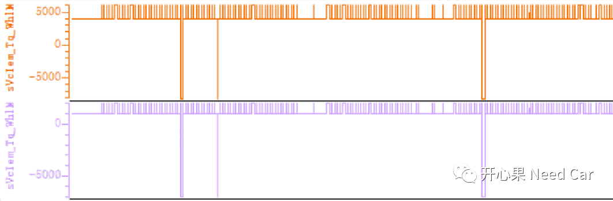
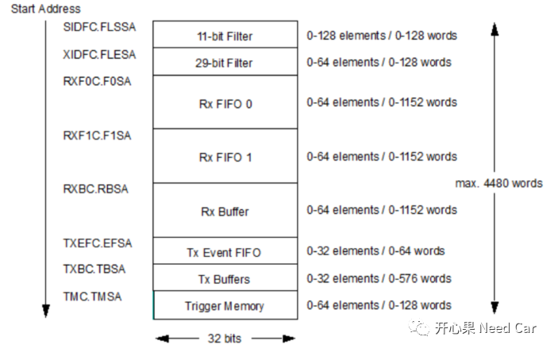
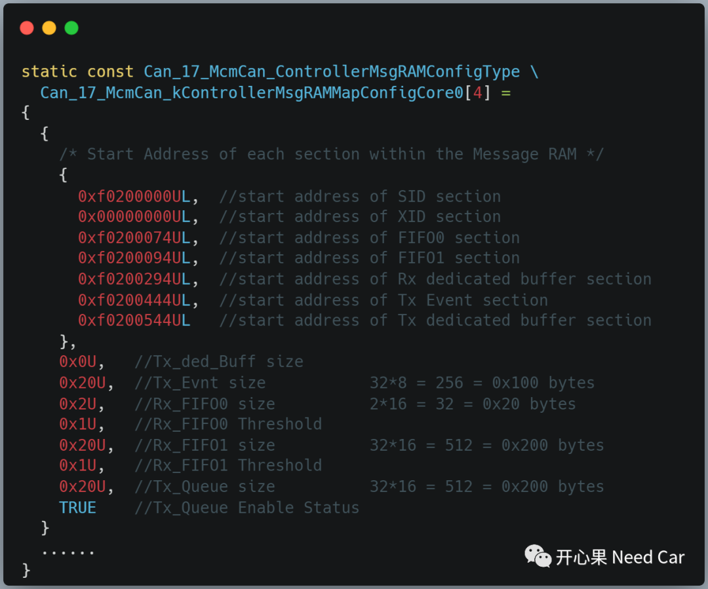
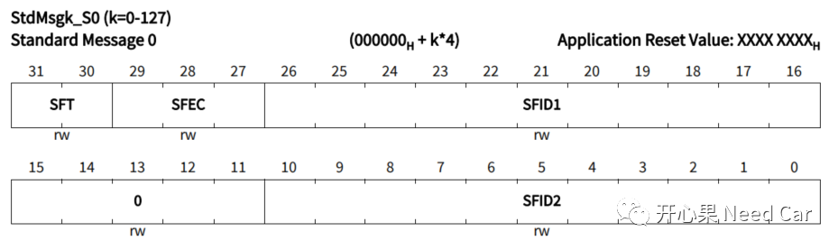
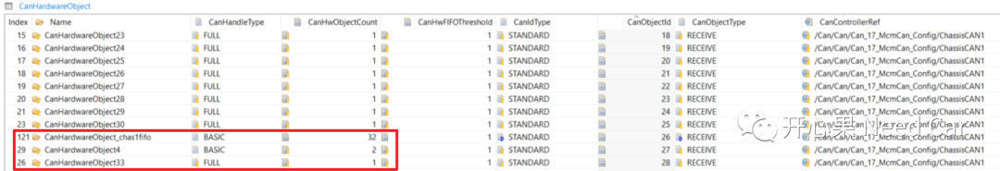
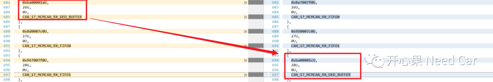
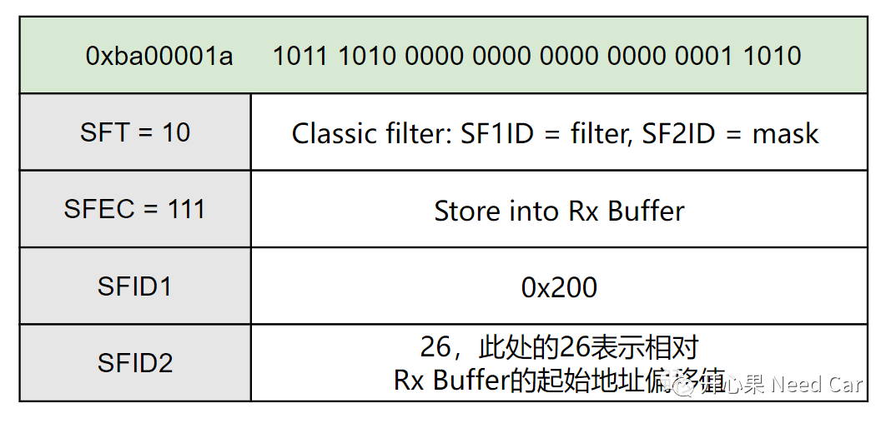
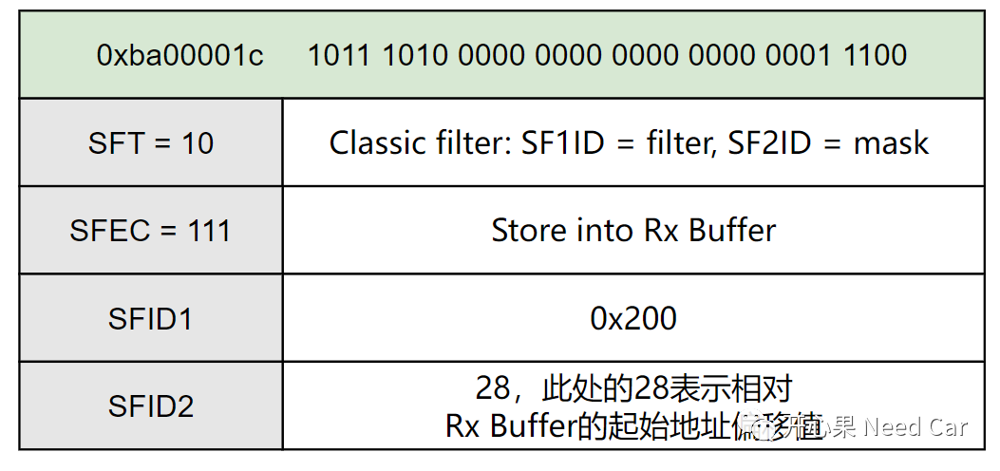
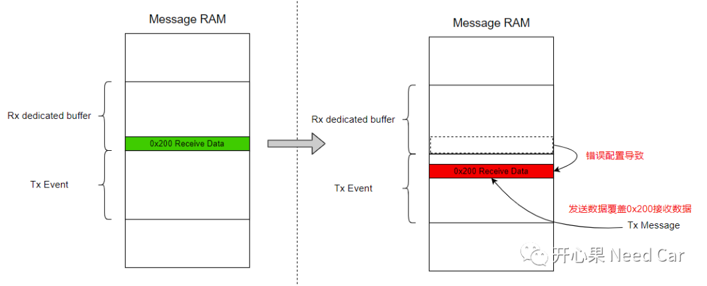

开心果 Need Car · 2023-09-11T11:47:00+08:00 · 微信原文
工程项目中，大家可能会注意到：不管哪家主机厂的网络拓扑，CAN总线是不可或缺的一种总线。所以，了解CAN总线似乎是一名汽车工程师的基础课，很多时候，我们可能觉得自己很懂，而实际呢？个人观点，最好的方式就是让工程问题去衡量你对CAN总线或者某个知识体系的理解深度。本文，就大家耳熟能详的CAN总线进行一个工程问题剖析：Full CAN与Basic CAN配置错误，导致信号跳变。
提示：本工程问题对应英飞凌TC3xx芯片，EB配置MCAL
1、问题背景

显然，如上信号的跳变会给整车带来安全隐患，因此，测试也会将问题严重度设置较高等级，eg：S级或者A级。
2、根因分析
在进行根因分析之前，先补充一些MCAN基础信息。
（一）Message RAM
在英飞凌的芯片中，MCAN模块有一块Message RAM，这块空间主要用来划分过滤空间、接收数据空间以及发送数据空间，至于如何切分Message RAM，由用户或者工具设置。虽然Message RAM区可以按需切割，但是，切割的顺序需要按照手册要求实现，Message RAM如下所示：

解读：
Message RAM的总大小为4480 words；
在切割Message RAM时，需要按照上图顺序排布，即：SIDFC.FLSSA->XIDFC.FLESA->RXF0C.F0SA->RXF1C.F0SA->RXBC.RBSA->TXEFC.EFSA->TXBC.TBSA->TMC.TMSA。当然，如果实际没有用到某些区域，则不用切割Message RAM，eg：可以不用Rx FIFO 1。
Message RAM在EB中的配置某个Can Controller示例如下所示：

（二）Standard Message ID Filter Element解读
Message RAM开始区域就是设置ID过滤，具体会对应到StdMsgk_S0 (k=0-127)寄存器。StdMsgk_S0各位域如下所示：

部分内容解释：
SFT（Standard Filter Type）：00B Range filter from SF1ID to SF2ID (SF2ID≥SF1ID)，可以过滤一段ID；01B Dual ID filter for SF1ID or SF2ID，过滤SF1ID或者SF2ID；10B Classic filter: SF1ID = filter, SF2ID = mask；11B Filter element disabled.
SFEC（Standard Filter Element Configuration）：过滤后的处理方式，111B Store into Rx Buffer or as debug message, configuration of SFT[1:0] ignored，过滤匹配放到Rx Buffer缓存区。
SFID2（Standard Filter ID 2）：SFID2[5:0] defines the offset to the Rx Buffer Start Address RXBC.RBSA for storage of a matching message.如果SFT配置成10模式，则SFID2[5:0]表示此报文在Rx Buffer的偏移（offset）。

经过如上的MCAL配置调整以后，CanHardwareObject33的CanObjectId由原来的26变成了28。如此，会导致什么问题呢？对比生成的配置代码（本文Can_17_McmCan_kSIDFilterConfigCore0，配置文件Can_17_McmCan_PBcfg.c）如下所示（右侧是错误配置）：

就是因为如上的配置，导致本应放入Rx dedicated buffer区间的数据错误的放到了Tx Event区间。如何理解呢？分析如上变动，具体解释如下：
1、正确配置分析
0xba00001a进行二进制展开：1011 1010 0000 0000 0000 0000 0001 1010B。对照StdMsgk_S0寄存器各位域解释如下：

如此配置，意味着0x200（CanHardwareObject33）接收的数据会放置到地址：0xF0200294+26*16 = 0xF0200434，此时，不会与Tx Event的起始地址0xF0200444位置重叠，数据可以正确处理。
2、错误配置分析
0xba00001c进行二进制展开：1011 1010 0000 0000 0000 0000 0001 1100B。对照StdMsgk_S0寄存器各位域解释如下：

如此配置，意味着0x200（CanHardwareObject33）接收的数据会放置到地址：0xF0200294+28*16 = 0xF0200454，此时，会与Tx Event的起始地址0xF0200444重叠，进而造成接收数据被发送数据覆盖，这就是信号跳变的原因。

3、解决措施
既然是MCAL配置异常导致的问题，问题的修复也就明了，修改EB中的MCAL配置，将同一个Controller的Full CAN移动到Basic CAN之前，严格按照EB手册约束配置。关于CanObject配置注意事项，可以参考前文《MCMCAN：CAN hardware object配置规则》。
往期精彩回顾
Autosar网络管理：网络管理报文CBV(Control Bit Vector)字节详解
诊断基础：不同会话(Session)，诊断报文如何维持网络状态？